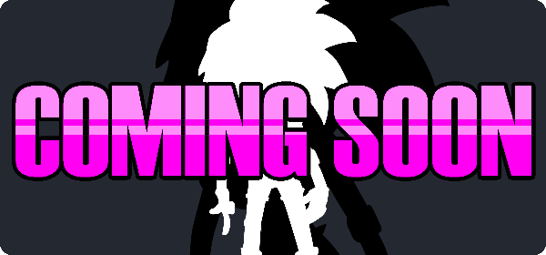

Independent and self published video game developer
August 2023
Cathode Maker Launch!!!!!

If you've seen me post Get Keen stuff elsewhere, you may know me better as "Jazzyman." I'm launching the "Cathode Maker" name as a platform to release all my games in a bit more of a 'professional' manner. I hope you enjoy all the flashing GIFs and rainbow mouse cursor.
David Get Keen Steam Page

David Get Keen finally has a Steam page!! If you're interested in the game, be sure to go and wishlist it. I know ya'll don't buy stuff on Steam if it ain't on sale: wishlisting will tell you when you can get the best deals outside of piracy.
New Game In the Works
Ahh yes, a side project, the ultimate game developer's trap. I've been working on a game completely unrelated to Keen. This one is of a smaller scale, so you should expect a release quite soon. The graphics look too terrible for me to show right now, so I'll probably be back here in a month with some screenshots.